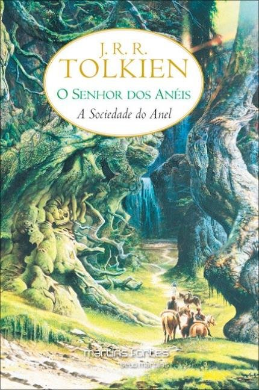

Livraria: Mangá é a Nossa Lingua |
|
|
|
Autor:Stephen KingSinopse:No verão de 1958, Bill, Richie, Stan, Mike, Eddie, Ben e Beverly, sete pré-adolescentes, moradores da fictícia cidade de Derry, no Maine, estão de férias e se deparam com um monstruoso ser milenar, que reaparece a cada 27 anos para se alimentar de crianças.
O clube dos Perdedores investiga o passado da cidade e se depara com a assustadora criatura chamada de It, que aparece na forma de um palhaço chamado Pennyswise, o palhaço dançarino, o qual enfrentam, mas não conseguem vencê-lo totalmente. O grupo então faz uma promessa de sangue: Enfrentar e destruir a coisa, caso um dia ela retorne.[2]
Passado mais um período de 27 anos, novamente crianças começam a desaparecer, um sinal que criatura está de volta e a promessa tem que ser cumprida.[3]
It tem cerca de 1.100 páginas e foi adaptado para uma série de TV em 1990, posteriormente convertida em um telefilme. Mais tarde, o romance foi adaptado para um filme, rodado em duas partes: a primeira, que estreou em 2017; a segunda prevista para 2019..
|
|
|  |
Autor(a): Autor:J.R.R.Tolkien. Sinopse:O primeiro volume, A Sociedade do Anel, publicado em 1954.A Sociedade do Anel é a primeira parte da trilogia O Senhor dos Anéis,
considerado o melhor e mais respeitado livro de fantasia de todos os
tempos. A trilogia passa-se num lugar chamado Terra média que é
habitada por vários seres fantásticos, incluindo elfos e anões, magos e
dragões, trolls e orcs, hobbits (também chamado de pequeninos, por
causa da sua altura diminuta) e muitas outras criaturas e raças,
mágicas e míticas. A Sociedade do Anel começa no Condado, uma vila de
hobbits, onde conhecemos o herói principal da história, Frodo Bolseiro.
Quando o tio de Frodo, Bilbo |
|
 |
Autor(a):Autor:J.R.R.Tolkien.> Sinopse: Inesperadamente, Bilbo Bolseiro, um hobbit de vida confortável e tranquila no Condado recebe a visita de 13 anões e Gandalf que o arrastam em uma jornada através das montanhas e das terras ermas enfrentando elfos, orcs, trolls, wargs, para o resgate de um tesouro muito bem guardado por Smaug, o Dragão. Bilbo se vê em diversas confusões e encontra algo que mudaria não só sua vida como de toda Terra Média. |
|
|
Autor(a):Rick Riordan Sinopse:O primeiro livro da série introduz Percy Jackson, um garoto de 12 anos com TDAH e dislexia. Percy estuda na Academia Yancy, uma escola de primeiro grau para crianças problemáticas. O livro começa com Percy e seu melhor amigo, Grover Underwood, junto a outros colegas de classe em uma excursão escolar a um museu. No museu, Percy é atacado por uma criatura mitológica conhecida como Fúria, que estava disfarçado como sua professora de iniciação à álgebra, a Sra. Dodds. Percy a mata com uma espada poderosa chamada Anaklusmos, ou Contracorrente, que está disfarçada como uma caneta, e que foi dada a ele pelo seu professor de latim, o Sr. Brunner.. |
|
 |
Autor(a): J. K. Rowling Os romances giram em torno de Harry James Potter, um órfão que descobre com 11 anos que é um bruxo, que vive no mundo comum de pessoas não-mágicas, conhecidas como "trouxas".[8] O mundo bruxo é mantido em segredo, presumivelmente para evitar a perseguição de bruxas e bruxos. Tal habilidade é inata e essas crianças são convidadas a participar de uma escola de magia exclusiva, que ensina as habilidades necessárias para ter sucesso no mundo bruxo.[9] Harry torna-se um estudante da Escola de Magia e Bruxaria de Hogwarts e é ali onde a maioria dos eventos da série acontecem. Enquanto Harry se desenvolve através da adolescência, ele aprende a superar os problemas que ele enfrenta: mágicos, sociais e emocionais, incluindo desafios adolescentes comuns, como amizades, paixões e provas, e o grande teste de preparar a si mesmo para o confronto no mundo real que temos pela frente.
|
|